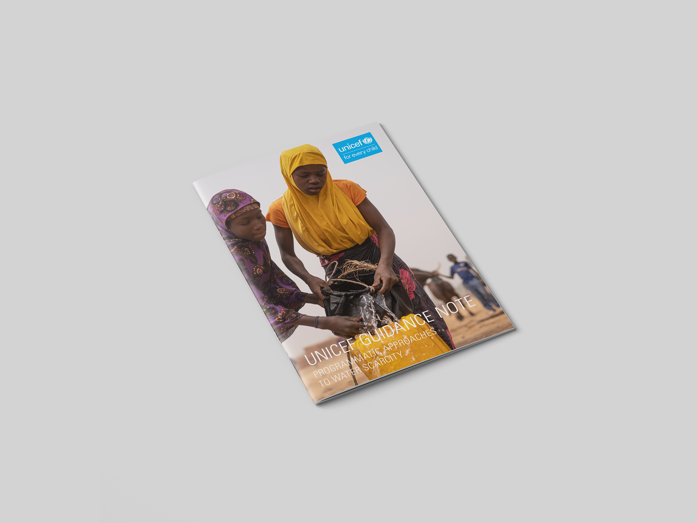

Designed charts and implemented a layout on a team of two designers at The Visual Agency for the Unicef Guidance Note on Programmatic Approaches to Water Scarcity. The project was completed on a tight deadline (one week) and according to client specific style needs.



Click here to view the full paper.